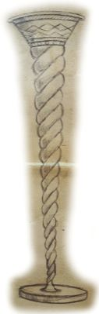

Krynica Nieśmiertelności (ang. Font of Immortality) to jeden z pięciu artefaktów niezbędnych do otwarcia Więzienia Demonów – Zzyzxu. Artefakt ten, będący trzecim rogiem jednorożca połączonym z pozłacaną czarą, gwarantuje nieśmiertelność osobie, która regularnie, co najmniej raz w tygodniu, pije z niego. Jednakże, jeśli ktoś po długotrwałym korzystaniu przestanie spożywać z Krynicy, zostanie zamieniony w proch. Zniszczenie tego artefaktu jest niezwykle trudne, ale w razie jego zburzenia Krynica Nieśmiertelności nie przestanie istnieć – zniknie i pojawi się w innym miejscu.
Krynica Nieśmiertelności to misternie wykonana czara z alabastru, zdobiona złotymi akcentami i połyskującą emalią. Jej smukłą nóżkę tworzy perłowa spirala, będąca trzecim rogiem jednorożca, zakończona solidną, stabilną podstawką.